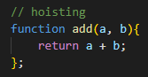
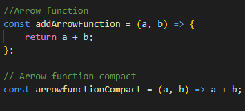
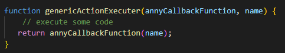
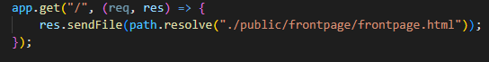

A function is a way that we can reuse logic or make code cleaner.
An arrow function is a way of makeing a function cleaner and faster.
A callback funtion uses the same idea as a normal function.
The difference is that a callback funtion takes a funtion in the parameter.
GET is used to request data from a specified resource.
